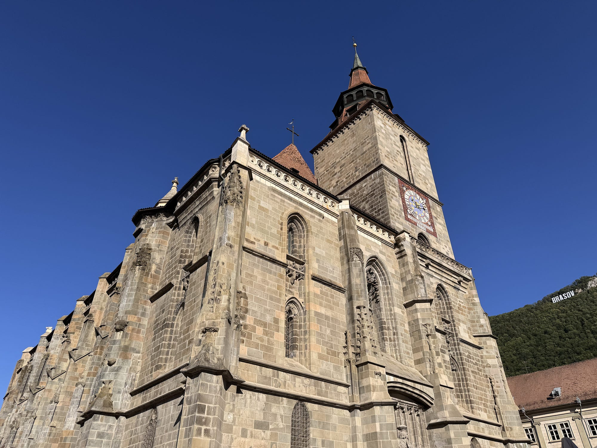
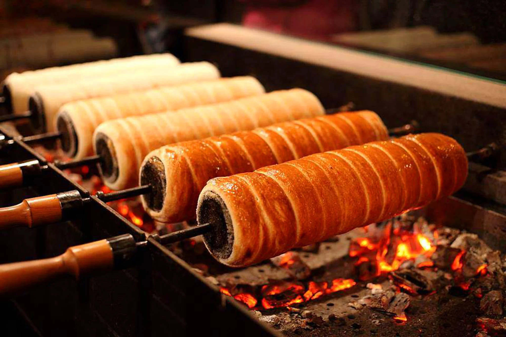

-

The city's most famous and dramatic symbol, this Art Nouveau masterpiece sits directly on a promenade overlooking the Black Sea. -

A delicious legacy of the local Tatar and Turkish heritage, you can find these at bakeries all over the city. -

This towering Gothic cathedral dominates the old town. It earned its name after a major fire in the 17th century blackened its walls, and today it houses an impressive collection of Anatolian carpets. -

Reflecting the strong Saxon and Hungarian heritage of the Brașov region, you cannot walk through Council Square without catching the sweet smell of these spinning pastries. -

The Lutheran Evangelical Cathedral of Saint Mary is a towering 14th-century Gothic masterpiece that dominates Sibiu's skyline with its spectacular, colorful geometric-tiled roof. -

The mountains surrounding Sibiu (Mărginimea Sibiului) are home to centuries-old sheep-herding traditions. The local Telemea is a premium, semi-hard white cheese aged in brine.